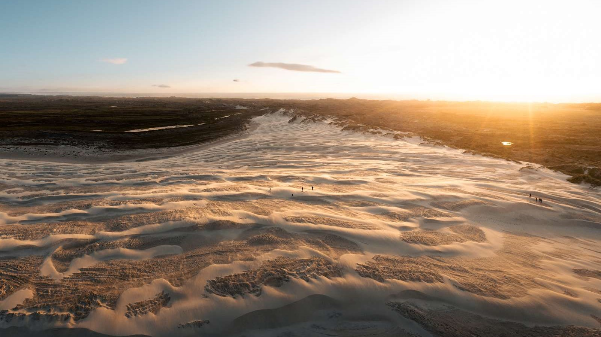
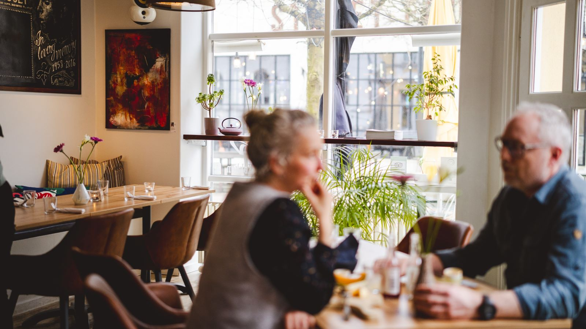
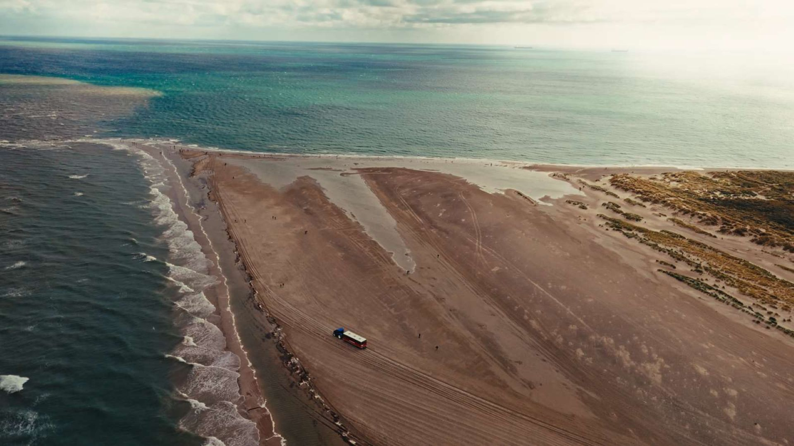
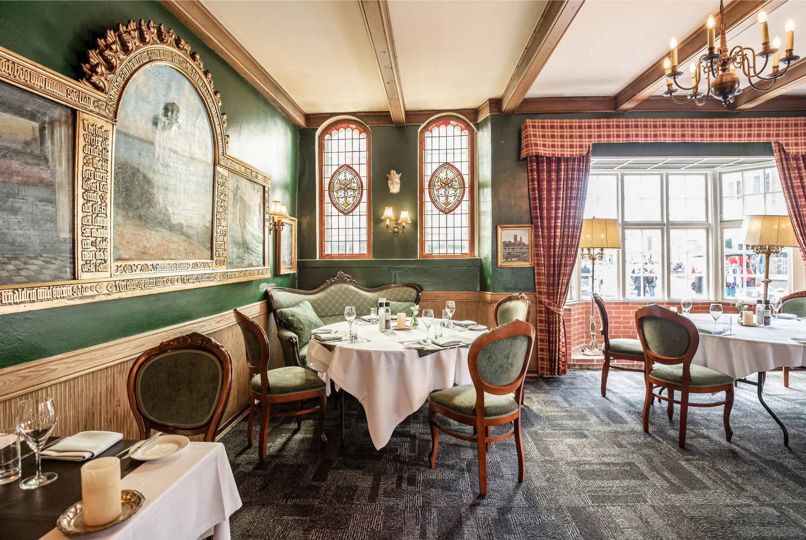
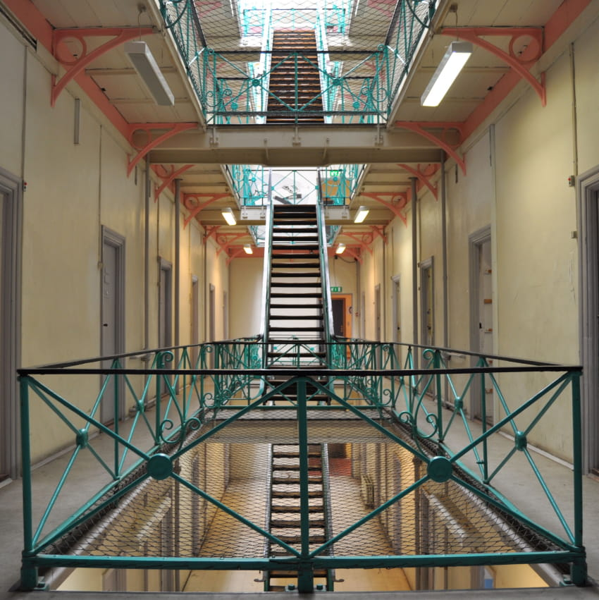
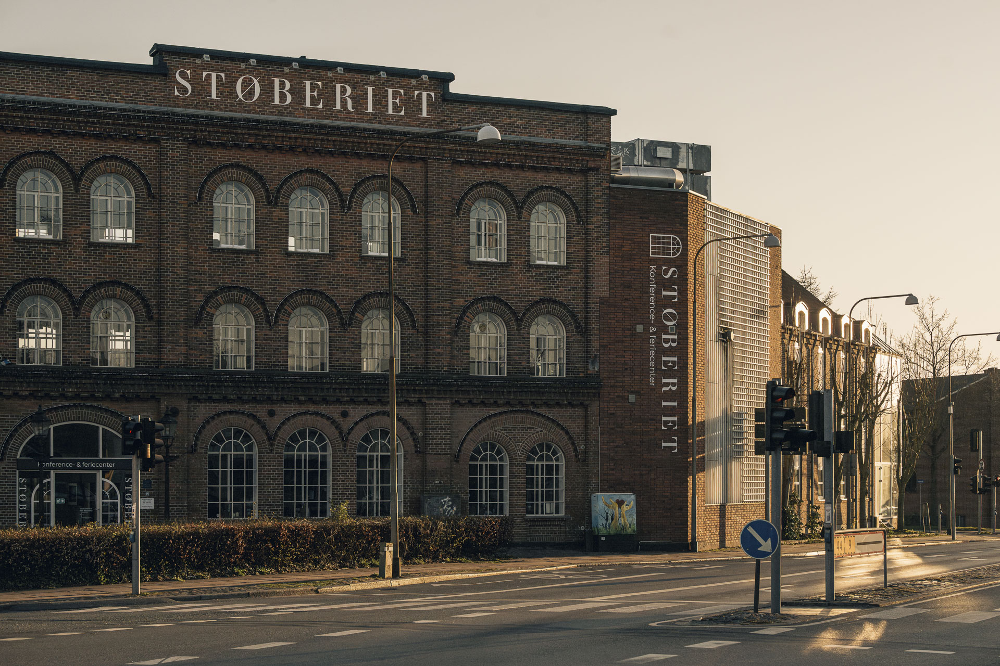
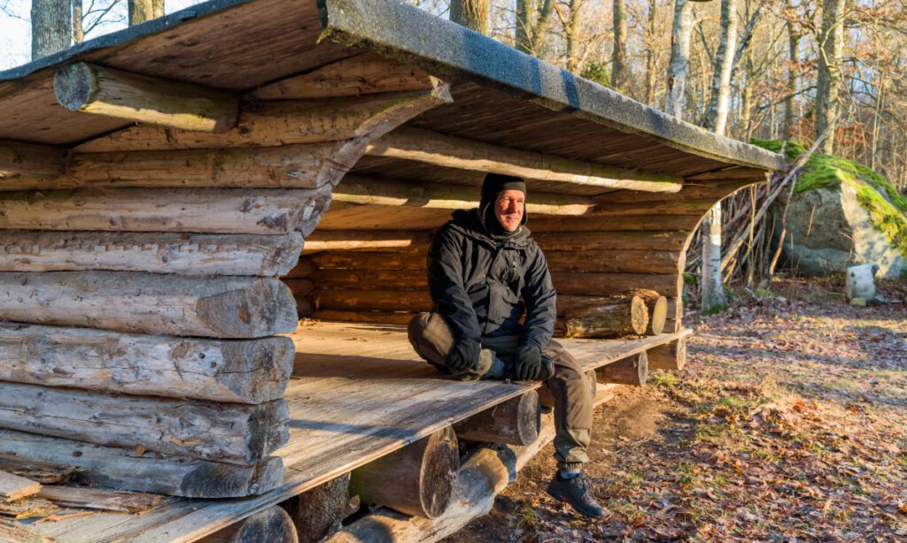

Din personlige rejseguide
Hos TÆT PÅ DK har vi samlet Danmarks bedste router, overnatningssteder, oplevelser og seværdiger på et sted, så det er let tilgængeligt for det rejseglade folk. Men vi er også gået skridtet videre og fundet de skjulte perler, hyggelige caféer og lokale butikker, så du kan komme endnu tættere på Danmark.

Vores vision
Vi mener, at ferie og oplevelser er for alle, uanset pengepungens størrelse. Derfor vil vi gerne levere inspiration til, hvordan man kan få massere af oplevelser for pengene; fra Møns Klint til Skagens Gren. Ydermere, vil vi gerne bakke op om det lokale; De små butikker, caféer og restauranter, der drives af dem, der virkelig brænder for det.

Bæredygtighed
Når du vælger staycation, vælger du ikke blot at komme endnu tættere på det land, du bor i, du vælger også en mere bæredygtig ferie. Vælger du oven i købet at booke dit næste eventyr gennem TÆT PÅ DK, så tager du et miljø-bevidst valg. Vi har nemlig sørget for, at de overnatningssteder du kan booke hos os har enten Svanemærket eller EU-blomsten. Det er din garanti for, at de er blandt de mindst miljøbelastende.




Bliv annoncør
Har du en forretning, café, restaurant eller noget helt fjerde, som du mener danskerne bør se og opleve, så kontakt os; vi vil gerne høre mere om din vision.
Kontakt os
Har du spørgsmål til booking, vores anbefalinger, samarbejdspartnere mm. så tøv ikke med at tage kontakt. Skriv til os på: kontakt@taetpaa.dk